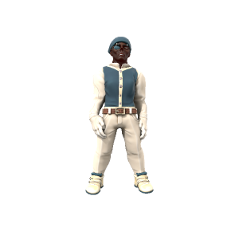

Ishmael Kaine
Steadfast. Punctual. Dependable. Bosun Kaine knows everything that happens aboard The Vengeance, every feather in the crow's nest to each barnacle on the hull, he keeps meticulous logs with military precision. He runs the ship's admin the way he runs his life, disciplined and precise.

🡐 Home